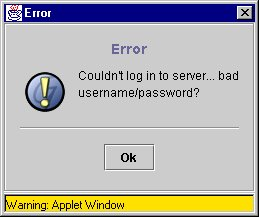
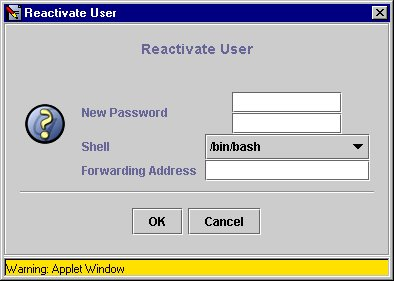
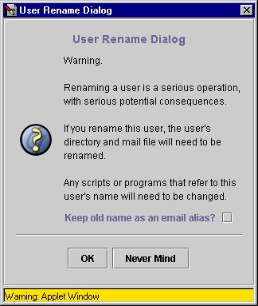
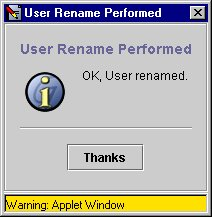

error.gifok.gifquestion.gif
Introduction |
Do not meddle in the affairs of wizards, for they are subtle, and quick to anger. -- J.R.R. Tolkein
Ganymede is all about storing and manipulating data objects. When a user sits down to work with Ganymede, he issues commands to create, delete, and edit objects. These commands are given to the Ganymede client, which in turn uses RMI to call methods on objects held on the server, using the Session, db_object, and db_field RMI remote interfaces. In response to these method calls, the server attempts to make changes to fields and objects in its database. Not all such method calls can succeed, however. The user may not have appropriate permissions for the attempted operation, or the operation may not make sense in the context of other objects in the database. In such cases, those method calls have to be able to return a failure report to the client.
This is achieved in the Ganymede server by the use of ReturnVal objects. All database-changing method calls on Session, db_object, and db_field references return ReturnVal objects to provide detailed results to the client.
All methods that return ReturnVal
objects work in the same general way. Most methods will return
null if the operation succeeded and no special value
needed to be returned to the client. Some methods (such as Session.edit_db_object())
will have to return a ReturnVal
on success so that the client can extract the remote db_object
reference from the ReturnVal
object's getObject()
method. At other times, an operation may succeed but require that
the client be given a list of objects and fields to update so that
the user will see changes made across objects in all objects that
are affected. More on this later.
If a ReturnVal object is returned from the server, the client will call its didSucceed() method to learn whether the operation succeeded or failed.
Success or failure is the most basic information that can be carried by a ReturnVal object. If an attempted operation could not be performed, the user will be wondering why. We can't leave the user wondering, so ReturnVal objects can pass a dialog definition to the client for display.
And therein lies a tale.
Dialogs and ReturnVal Objects |
The Ganymede client contains a piece of code called a StringDialog. The StringDialog class is a generic dialog class that can display a variety of information as specified by a DialogRsrc object. The DialogRsrc object, in turn, can be constructed from a JDialogBuff object.
The JDialogBuff object is designed so that it can be passed over the RMI link between the server and the client. In this way, the server can provide a dialog specification for the client to display.
As you have guessed by now, the ReturnVal objects passed from the server to the client can include a JDialogBuff dialog description. The client can access this dialog by calling the ReturnVal object's getDialog() method.
JDialogBuff's are general-purpose dialog definition structures. The JDialogBuff constructors can take a string for the dialog's title, another string for the main body, strings for the ok and optional cancel buttons, and a filename for an image to be displayed on the left side of the dialog, as shown below:

In order to return the above dialog to the user, the server might contain the following code:
ReturnVal retVal = new ReturnVal(false); // failure
JDialogBuff dialogDef = new JDialogBuff("Error",
"Couldn't log in to server.. bad username/password?",
"Ok",
null, // no cancel button
"error.gif");
retVal.setDialog(dialogDef);
return retVal;
Note that the string used for the title will appear in the
dialog itself, as well as in the dialog's title bar. The string
provided for the body will be word-wrapped to fit in the displayed
dialog, and can include explicit newline characters to break the
text into paragraphs. The image shown in the dialog is called
error.gif, and refers to an image resource available
to the client. The following images are guaranteed to be
available to the client through its jar file:
|
|
|
error.gif |
ok.gif |
question.gif |
Error dialogs of the kind shown above are created often enough in the Ganymede server that there is a special method provided to simplify this process. The following code does exactly the same as the code above:
return Ganymede.createErrorDialog("Error", "Couldn't log in to server.. bad username/password?");
JDialogBuff has more tricks. In addition to a title, icon and body of text, the StringDialog created on the client from the JDialogBuff can display one or more GUI widgets that the user can fill in, as in the following:

In order to return the above dialog to the user, the server might contain the following code:
ReturnVal retVal = new ReturnVal(false); // failure
JDialogBuff dialogDef = new JDialogBuff("Reactivate User",
null,
"Ok",
"Cancel",
"question.gif");
dialogDef.addPassword("New Password", true);
Vector choices = new Vector();
choices.addElement("/bin/bash"); // in real life, these are extracted from the database
choices.addElement("/bin/tcsh");
choices.addElement("/bin/ksh");
dialogDef.addChoice("Shell", choices, "/bin/bash");
dialogDef.addString("Forwarding Address", null);
retVal.setDialog(dialogDef);
return retVal;
There is one problem with the example above, though. What is the client supposed to do with the GUI fields that have been added? They are obviously there so that the user can answer some questions, but then what?
Ah. Now we're getting into the land where wizards get involved.
Wizards |
In addition to the success/failure code and JDialogBuff dialog definition, the ReturnVal object can also carry a Ganymediator RMI remote reference. Just as the setDialog method is used to register a JDialogBuff to be returned to the client, so is the setCallback used to register a remote Ganymediator reference to be passed back to the client.
The Ganymediator reference is a different sort of thing from the JDialogBuff object, however. The Ganymediator reference is an RMI remote reference to an object on the server, while the value of the JDialogBuff object is actually passed to the client.
If the client gets a ReturnVal back from the server that contains both a JDialogBuffu object and a Ganymediator reference, the client will engage in a wizard interaction sequence.
How this works is simple. The client takes the JDialogBuff
from the ReturnVal
object, and displays the dialog to the user. When the user is
finished interacting with the dialog, the client packages up the
values from the dialog and does an RMI call to the Ganymediator
object on the server, using the respond()
method defined in the Ganymediator
interface. That respond()
method will in response return another ReturnVal
object, or null if the interaction sequence has
completed successfully. Any of the subsequently returned ReturnVal
objects may themselves carry additional JDialogBuff
objects and Ganymediator
references, in which case the interaction continues.
In this way, the client, and the server do a little dance to walk the user through a series of dialogs. The final ReturnVal returned by the Ganymediator will have the final results of whatever operation initiated the wizard sequence. Any method call in Session, db_object, and db_field that return ReturnVal objects can interpose a wizard by simply encoding a JDialogBuff object and a Ganymediator remote reference.
But where does the Ganymediator reference come from? And how does the server keep track of the status of a wizard?
Again, the answer is simple. All of the wizard bookkeeping is done by a clever little class called GanymediatorWizard
The GanymediatorWizard Class |
In order to talk about the GanymediatorWizard
class, I'm going to present and walk through an actual (although
somewhat simplified) Ganymede wizard from the gasharl schema kit.
This wizard is presented to the user when he attempts to edit an
existing user object's username field. When such a change is
attempted, the userCustom DBEditObject
subclass which is bound to the user object in the Ganymede server
(see the wonderful DBEditObject Subclassing
Guide)'s wizardHook() method
detects the operation and, instead of returning null to give the
operation the ok, creates the wizard and gets the whole process
going, as follows:
wizardHook() |
/**
*
* This is the hook that DBEditObject subclasses use to interpose wizards whenever
* a sensitive field is being changed.
*
*/
public ReturnVal wizardHook(DBField field, int operation, Object param1, Object param2)
{
userRenameWizard renameWizard = null;
/* -- */
if ((field.getID() != USERNAME) ||
(operation != SETVAL))
{
return null; // by default, we just ok whatever else
}
In fact, in the real code we check some more things out, like whether the user is
being newly created (in which case we don't want to complain about a rename), or whether
the user is being deleted (in which case we don't mind them setting the name to null).
String oldname = (String) field.getValue();
We're being called by the system because the DBField
is checking to see if it's okay to do a SETVAL on itself. We are here to check
that out, but we're going to want to keep track of the old name for the dialogs, etc.
if (!gSession.enableWizards)
{
return null; // no wizards if the user is non-interactive.
}
// Huh! Wizard time! We'll check here to see if there is a
// registered userRenameWizard in the system taking care of us.
if (gSession.isWizardActive() && gSession.getWizard() instanceof userRenameWizard)
{
renameWizard = (userRenameWizard) gSession.getWizard();
if ((renameWizard.getState() == renameWizard.DONE) &&
(renameWizard.field == field) &&
(renameWizard.userObject == this) &&
(renameWizard.newname == param1))
{
// ok, assume the wizard has taken care of getting
// everything prepped and approved for us. An active
// wizard has approved the operation
renameWizard.unregister();
// note that we don't have to return the rescan fields
// directive here.. the active wizard is what is going to
// respond directly to the user, we are presumably just
// here because the wizard task-completion code went ahead
// and called setValue on the user's name.. we'll trust
// that code to return the rescan indicators.
return null;
}
else
{
renameWizard.unregister();
return Ganymede.createErrorDialog("User Object Error",
"The client is attempting to do an operation on " +
"a user object with an active wizard.");
}
}
else if (gSession.isWizardActive())
{
return Ganymede.createErrorDialog("User Object Error",
"The client is attempting to do an operation on " +
"a user object with mismatched active wizard.\n" +
"Wizard id: " + gSession.getWizard());
}
The above section is a bit confusing. What's going on here is that if/when the wizard finally ok's the operation, it's going to try to rename the user itself. The above code is here so that if the wizard does try to rename the user, we won't force IT to have to deal with another copy of itself to get the operation approved.
The GanymedeSession object that tracks permissions and the user's activities in the Ganymede server also tracks whether a wizard is active. Each client is only allowed one wizard at a time, until the wizard is unregistered() using the GanymediatorWizard unregister() method.
else
{
// there's no wizard active, and this operation has to be approved by one. Go ahead
// and set up the wizard and let the client play with it.
try
{
// Mike Jittlov is the Wizard of Speed and Time
renameWizard = new userRenameWizard(this.gSession,
this,
field,
(String) param1,
oldname);
}
catch (RemoteException ex)
{
throw new RuntimeException("Couldn't create userWizard " + ex.getMessage());
}
// if we get here, the wizard was able to register itself.. go ahead
// and return the initial dialog for the wizard. The ReturnVal code
// that wizard.respond() returns will have the success code
// set to false, so whatever triggered us will prematurely exit,
// returning the wizard's dialog.
return renameWizard.respond(null);
We now have the wizard created, and we return the ReturnVal object resulting from calling the renameWizard's respond() method with a null parameter. This will trigger the wizard to return its first dialog, and from that point on, the client will talk to the wizard directly to get the job done.
Remember that we got here by the client calling a method on a db_field reference. That remote method call got processed by a DBField subclass (in this case StringDBField, since the username is a string field), which called our wizardHook() method. That DBField method knows that if it gets a non-successfulReturnVal value back from wizardHook() that it should just pass it through and let the client and the wizard work things out.
}
}
The userRenameWizard |
/*------------------------------------------------------------------------------
class
userRenameWizard
------------------------------------------------------------------------------*/
/**
* A wizard to handle the wizard interactions required when a user is
* renamed.
*/
public class userRenameWizard extends GanymediatorWizard {
Note that we are subclassing GanymediatorWizard here. This is very important.. all Ganymede wizards should be subclassed from GanymediatorWizard.
/** * The user-level session context that this wizard is acting in. This * object is used to handle necessary checkpoint/rollback activity by * this wizard, as well as to handle any necessary label lookups. */ GanymedeSession session; /** * The actual user object that this wizard is acting on */ userCustom userObject; /** * The username field in the user object that we may change */ DBField field; /** * The proposed new name for the user */ String newname; /** * The old name for the user */ String oldname;
Everything in this section above are local variables that the wizard keeps track of as it goes through the dialogs, so that it can know enough to get its job done.
/* -- */
/**
*
* This constructor registers the wizard as an active wizard
* on the provided session.
*
* @param session The GanymedeSession object that this wizard will
* use to interact with the Ganymede data store.
* @param userObject The user object that this wizard will work with.
* @param newname The proposed new name for the user.
*
*/
public userRenameWizard(GanymedeSession session,
userCustom userObject,
DBField field,
String newname,
String oldname) throws RemoteException
{
super(session); // register ourselves
This call to the super constructor is extremely important.. without it, all of the code in GanymediatorWizard which handles all of the wizard sequence bookkeeping won't get done.
this.session = session;
this.userObject = userObject;
this.field = field;
this.newname = newname;
this.oldname = oldname;
}
/**
*
* This method provides a default response if a user
* hits cancel on a wizard dialog. This should be
* subclassed if a wizard wants to provide a more
* detailed cancel response.
*
*/
public ReturnVal cancel()
{
return fail("User Rename Cancelled",
"OK, good decision.",
"Yeah, I guess",
null,
"ok.gif");
}
The cancel()
method we override here is called automatically by the
GanymediatorWizard
respond()
method if it gets a null result back from the client, which means the user
hit the cancel button. This can occur at any point where the user is presented with a dialog
in connection with this wizard.
By calling fail(), we return a dialog to the user letting them know where the operation stands:

/**
*
* This method starts off the wizard process
*
*/
public ReturnVal processDialog0()
{
ReturnVal retVal = null;
/* -- */
retVal = continueOn("User Rename Dialog",
"Warning.\n\n" +
"Renaming a user is a serious operation, with serious potential consequences.\n\n"+
"If you rename this user, the user's directory and mail file will need to be renamed.\n\n"+
"Any scripts or programs that refer to this user's name will need to be changed.",
"OK",
"Never Mind",
"question.gif");
retVal.getDialog().addBoolean("Keep old name as an email alias?");
return retVal;
}
processDialog0 is called automatically by the GanymediatorWizard class the first time its respond() method is called. By returning the results of a continueOn() call, we are telling the GanymediatorWizard code that we want to continue with the dialog sequence, and we provide a dialog to the user, as follows:

/**
*
* The client will call us in this state with a Boolean
* param for key "Keep old name as an email alias?"
*
*/
public ReturnVal processDialog1()
{
ReturnVal retVal = null;
/* -- */
System.err.println("userRenameWizard: USER_RENAME state 1 processing return vals from dialog");
Boolean answer = (Boolean) getParam("Keep old name as an email alias?");
When the client responded to our first dialog, they had the option of clicking on a checkbox to choose to keep the user's old name as an email alias for the new. When the user hit the Ok button, the client packaged up all of the values associated with the GUI widgets and returned them in a serialized Hashtable to the respond() method, which unpacked the results for us. We use the getParam() method to get the value for that checkbox, using the name we gave it as the key.
// One thing we need to check is whether the new name that they
// are wanting is already an alias for them..
StringDBField aliases = (StringDBField) userObject.getField(userSchema.ALIASES);
if (aliases != null)
{
if (aliases.containsElementLocal(newname))
{
aliases.deleteElementLocal(newname);
}
}
state = DONE; // let the userCustom wizardHook know to go
// ahead and pass this operation through now
Again, this is very important. By setting
state
to DONE, we are effectively telling the wizardHook() method in the userCustom class that we have
finished with this user and that it should go ahead and perform the operation
when we ask it to, which we do right now..
// note that this setValue() operation will pass
// through userObject.wizardHook(). wizardHook will see that we are
// an active userRenameWizard, and are at state DONE, so it
// will go ahead and unregister us and let the name change
// go through to completion.
retVal = field.setValue(newname);
System.err.println("userRenameWizard: Returned from field.setValue()");
// now we need to add the old name to the alias list, possibly.
if (answer != null && answer.booleanValue())
{
aliases.addElementLocal(oldname);
}
The setValue() call calls the wizardHook() method again, which in our case returns some field rescan information to tell the client to update other fields in the user object which are affected by a user rename. We're going to just tack on our own dialog here.
if (retVal.didSucceed())
{
retVal.setDialog(new JDialogBuff("User Rename Performed",
"OK, User renamed.",
"Thanks",
null,
"ok.gif"));
}
If we didn't know that setValue() was going to return a non-null ReturnVal, we would use the GanymediatorWizard success() method to create and return an 'all systems go' ReturnVal.
return retVal;
}
}
And if the user got through all of that, they'll see the following dialog:

Summary |
The Ganymede wizard system is an attempt to make a tricky problem as simple as possible. The GanymediatorWizard base class does a lot to keep everything working smoothly, so that all you need to do in order to make your own wizards is to subclass GanymediatorWizard, to override cancel(), and to define processDialog0, processDialog1, and so on, for as many steps as you need to have.
Although not shown in the example above, you can skip around in your dialog sequence by using the GanymediatorWizard setNextState() method to force the wizard to generate the specified dialog as the next step in the sequence.
The trickiest thing about wizard authoring in Ganymede is managing the logic interactions between your wizard and the wizardHook() method in your custom DBEditObject subclass. Mistakes here will result in exceptions being thrown in the server during normal operations, so it's important to test your work on a server that is not running live. The DBEditObject subclassing guide remains the primary reference for writing custom plug-ins on the server. Reading the code in the sample schemas included with the Ganymede distribution will help lots as well.